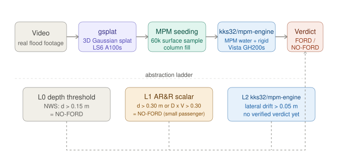
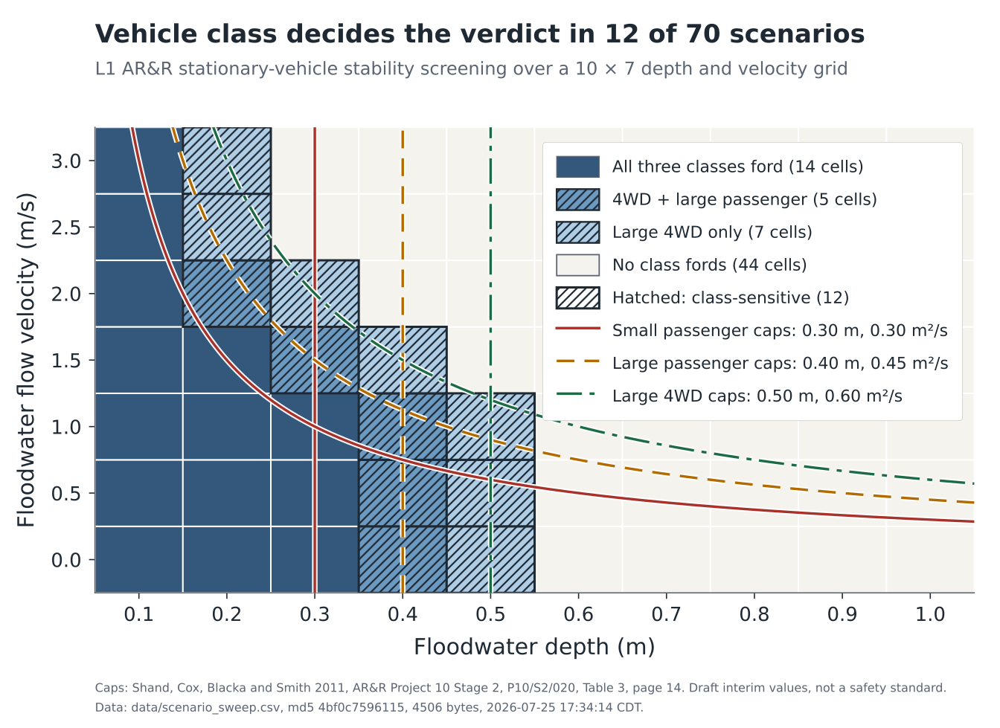

1 Claremont McKenna College, Claremont, CA | 2 GeoElements Lab, Texas Advanced Computing Center, The University of Texas at Austin
I am Josie Cerrell, an Integrated Sciences major at Claremont McKenna College. This work was done through the NSF REU Site: Cyberinfrastructure Research for Societal Advancement, hosted at the Texas Advanced Computing Center at The University of Texas at Austin, in the GeoElements Lab under PI Dr. Krishna Kumar, with daily mentorship from Hassan Iqbal, Cheng-Hsi Hsiao, and Sarah Etter.
Flooded roads kill people who could not tell they were dangerous. Depth, current speed, and whether the road under the water is still there are all invisible from a driver's seat. An autonomous vehicle has exactly the same blind spot, and so does an AI world model that predicts what a scene will look like next: it can generate a future that looks completely plausible while breaking the physics that actually decides whether the car makes it across.
Given a flooded road and a specific vehicle, can that vehicle ford it, and what is the simplest physics you can get away with and still be right?
Three levels of model, tested against the same flood conditions:
A safety criterion that is right on average and wrong in the specific case you are standing in is not a safety criterion.
The AR&R report's Table 3 gives three vehicle classes, small passenger, large passenger, and large 4WD, each with a limiting still-water depth, a limiting velocity of 3.0 m/s, and a limiting depth-velocity product. I read all three rows directly from the source PDF and applied all three caps jointly, which the earlier implementation in this project did not do. Two things the source says that are easy to get wrong: these are criteria for stationary vehicles, and the 3.0 m/s velocity cap is an evacuation safety limit imported from human stability research, not a vehicle stability result.
A watertight Toyota Yaris hull, 327,212 vertices, 1100 kg taken from the LS-DYNA deck header, hull volume 3.542739 m3, implied effective density 310.494 kg/m3, placed in a water column as a rigid body coupled to weakly-compressible water on an MPM grid.
Before trusting a simulated verdict I audited what the pipeline actually builds. I measured the vehicle's true volume and its submerged volume independently and compared them against what the simulation's own solidifier produces at four grid resolutions.

70 conditions: 10 depths from 0.1 to 1.0 m crossed with 7 velocities from 0 to 3.0 m/s.
| Class | FORD | NO-FORD |
|---|---|---|
| Small passenger | 14 | 56 |
| Large passenger | 19 | 51 |
| Large 4WD | 26 | 44 |
12 of the 70 cells are class-sensitive. This project's headline example, 0.30 m of water moving at 1.5 m/s, sits inside that band: NO-FORD for a small passenger car and FORD for a large 4WD. The vehicle class you assume decides the verdict, and the source gives no tie-break rule when a vehicle's length, weight, and ground clearance disagree about which class it belongs to.
At a 0.30 m waterline every grid resolution over-fills the vehicle, so every one of them overstates buoyancy and understates the traction holding the car on the road.
| Grid | Modeled traction | Understated by |
|---|---|---|
| 64 | 1391 N | 60 percent |
| 96 | 2459 N | 30 percent |
| 128 | 3204 N | 8.3 percent |
| true geometry | 3495.2 N | reference |
This is a one-sided bias, not an uncertainty band. A band would mean the true answer sits inside the measured spread and refining the grid closes in on it from both sides. That is not what happens. The true value lies above all of it. Every resolution errs in the same direction.
Assumptions, all of which move the number: hydrostatic only, valid at zero flow velocity; mu = 0.55 presented as a sensitivity bound, not a cited value; 1100 kg; and a sealed body displacing water over its full submerged envelope. The sealed-body assumption and the column-fill over-fill both inflate buoyancy, so they compound rather than cancel. PENDING the true-geometry reference derives from a submerged volume of 0.452204 m3 whose generating routine is not in the repository.
The scene builder throws the mesh away. It resamples any input to a fixed 60,000-point surface cloud and solidifies from that, so a 327,212-vertex watertight hull and a sparse point cloud scanned from video arrive at the solver as the same kind of object. Watertightness cannot protect against what happens next.
At default resolution the solidified body displaces 2.17 times the hull's true volume, +117 percent, and its submerged volume at 0.30 m depth is at least 1.64 times the true submerged volume. Every simulation run to date used a vehicle displacing more than twice the water it should.
An earlier dead end in this project, that a finer grid "hollows out" the vehicle, is a limit of that fixed 60,000-point sample rather than of grid resolution. Measured directly: raising the sample count sixteenfold changes the particle count by 0.7, 1.6, 1.8, 4.6, 12.3 and 37.2 percent at grids 32, 48, 64, 96, 128 and 192. 60,000 samples are adequate to grid 64, marginal at 96, and inadequate at 128 and above.
An entire earlier simulation track produced FORD verdicts in which the water never reached the vehicle. The water block sat 0.295 m from the vehicle at an inflow velocity of 0, so nothing ever closed the gap. Displacement logged 0.0000 m at every one of 500 steps. The single velocity signature in the run, 0.8240 m/s, matches free fall through the vehicle's own 3.5 cm ground clearance to within 0.6 percent: the square root of 2 x 9.81 x 0.035 is 0.8287 m/s. It is a car dropping onto dry ground beside a puddle it never contacted.
Those verdicts are retracted, not blocked. A blocked result waits on a run that has not happened yet and could still turn out real. A retracted result never measured what it claimed to measure. A second, independent defect in the same track: it hardcodes a superseded vehicle box of 4.66 x 1.79 x 1.44 m, 3.39 times the real hull volume.
PENDING No verified L2 FORD or NO-FORD verdict exists as of 2026-07-25. No results file carries an L2_verdict column, and the one file holding earlier L2-labelled rows comes from the retracted track above. The L1 versus L2 divergence claim that appears in older drafts of this project is therefore not asserted here.

Deep, still water is handled correctly by a threshold anyone can compute in their head. Shallow, fast water is where the cheap models and the expensive ones part company, and it is also the condition drivers most often misjudge as safe.
It is a family of criteria, one per vehicle class, drafted for stationary vehicles as an explicitly interim revision whose own authors called for full-scale testing and model calibration before anything like it could stand as a true safety guideline. Twelve of seventy conditions in this sweep change answer depending on which class you assume.
The two findings I trust most this summer are both negative: a traction estimate biased in one direction at every resolution tested, and a set of verdicts produced by a vehicle that never touched the water. Neither was found by running more simulations. Both were found by measuring what the pipeline actually built and comparing it against the geometry it claimed to be using. A number without the settings that produced it is not a result.
Run the coupled L2 sweep on corrected geometry to produce the first trustworthy simulated verdicts, reproduce the true-geometry submerged volume with a routine that lives in the repository, and extend from stationary-vehicle criteria toward the moving vehicle the "Can It Ford" question actually asks about.